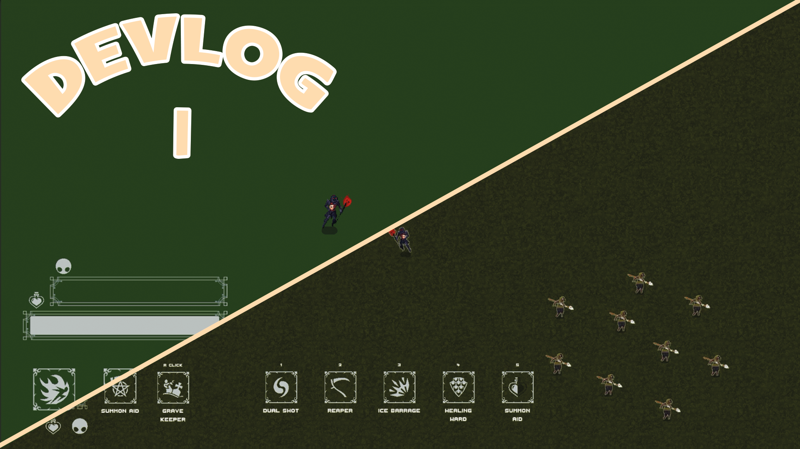
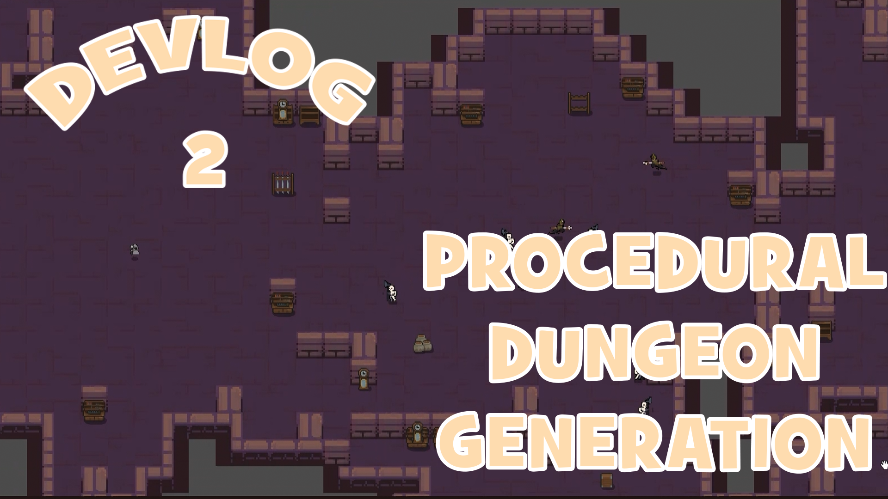
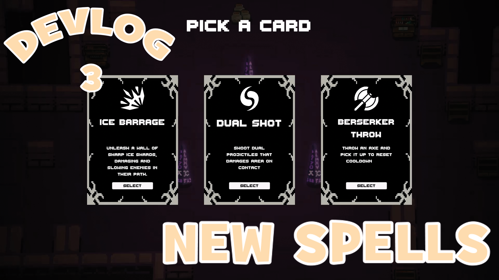

ROGUE-LIKE

This is my long-term project for year 2023. I have really high hopes from this one. Project-NextRogue is my take on the popular rogue-like genre. I personally love playing rogue-likes and my favorites are Dead Cells and Vampire Suvrivors. So i decided i should try to merge them in my way.
I am making a devlog series about this journey of mine. And you can be a part of it by clicking the YouTube button above.
This is a top-down wizard game. There is (will be) a lot of characters to play. Each one has 2 support 2 attack skills in their basic set. And player must use them to march his/her way through the map. Which is created using Random Dungeon Generation Algorithms by the way. When you make a rogue-like you have to make your map as different as possible in each run. That way player will not get bored over the time.
There is 5 empty skill slots that you can fil on your run. It resets when you die. And you can pick up skills every time you level up. You gain exp points while killing enemies and breaking boxes etc.
You can get more information on the devlog series.
